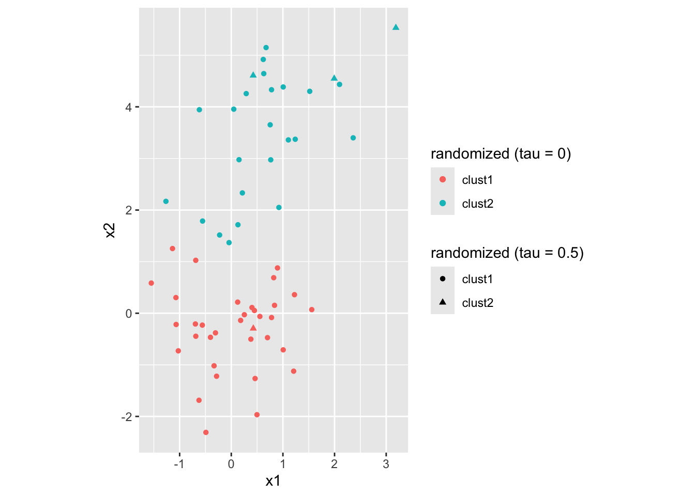

4 Randomized Hierarchical Clustering
4.1 Define some linkages
Given a dissimilarity matrix \(d\in\mathbb R^{n\times n}\), a linkage is a function that takes two index sets \(C_1\) and \(C_2\) and outputs a non-negative number (representing the dissimilarity of the two clusters).
4.1.1 Complete linkage
\[ d(C_1,C_2)=\max_{i\in C_1,j\in C_2}d_{ij} \]
#' Complete linkage
#'
<<linkage-params>>
linkage_complete <- function(clust1, clust2, d) {
max(d[clust1, clust2])
}4.1.2 Single linkage
\[ d(C_1,C_2)=\min_{i\in C_1,j\in C_2}d_{ij} \]
#' Single linkage
#'
<<linkage-params>>
linkage_single <- function(clust1, clust2, d) {
min(d[clust1, clust2])
}4.1.3 Group-average linkage
\[ d(C_1,C_2)=\frac1{|C_1|\cdot|C_2|}\sum_{i\in C_1,j\in C_2}d_{ij} \]
#' Group average linkage
#'
<<linkage-params>>
linkage_group_average <- function(clust1, clust2, d) {
mean(d[clust1, clust2])
}4.1.4 Minimax linkage
\[ d(C_1,C_2)=\min_{i\in C_1\cup C_2}\max_{j\in C_1\cup C_2}d_{ij} \]
#' Minimax linkage
#'
<<linkage-params>>
linkage_minimax <- function(clust1, clust2, d) {
both <- c(clust1, clust2)
min(apply(d[both, both], 1, max))
}
4.2 Randomized version of hclust
We begin by writing a function for computing the merge probabilities as in Section 2 of the paper:
\[ p_{kl} =\begin{cases} \frac{\exp(-d(C_k,C_l)/\tau)}{\sum_{k'<l'}\exp(-d(C_{k'},C_{l'})/\tau)}& \text{if } \tau>0\\ |A|^{-1}\cdot1\{(C_k,C_l)\in A\} & \text{if }\tau=0 \end{cases} \] where \(A=\arg\min_{k'l'}d(C_{k'},C_{l'})\).
#' Compute merge probabilities
#'
#' Computes merge probability vector as in Section 2. When tau is 0, puts equal
#' probability on all merges that have minimum dissimilarity. Probabilities are
#' taken to be 0 on upper triangle and diagonal.
#'
#' @param d a symmetric k-by-k matrix of dissimilarities between clusters
#' @param tau amount of randomization (tau = 0 is without randomization)
get_merge_probs <- function(d, tau) {
if (tau == 0)
mat <- d == min(d[lower.tri(d, diag=FALSE)])
else {
d_lower <- d[lower.tri(d, diag = FALSE)]
tau_eff <- tau * mean(d_lower)
mat <- exp(-d / tau_eff)
}
mat[upper.tri(mat, diag=TRUE)] <- 0
return(mat / sum(mat))
}Here’s a small example to check that this is working as desired:
d <- matrix(c(
0, 1, 1, 2,
1, 0, 3, 5,
1, 3, 0, 6,
2, 5, 6, 0
), nrow = 4, byrow = TRUE)
get_merge_probs(d, tau = 0)
round(get_merge_probs(d, tau = 1), 3)## [,1] [,2] [,3] [,4]
## [1,] 0.0 0 0 0
## [2,] 0.5 0 0 0
## [3,] 0.5 0 0 0
## [4,] 0.0 0 0 0## [,1] [,2] [,3] [,4]
## [1,] 0.000 0.000 0.000 0
## [2,] 0.272 0.000 0.000 0
## [3,] 0.272 0.139 0.000 0
## [4,] 0.195 0.072 0.051 0Now we are ready to define the main function.
#' Randomized Hierarchical Clustering
#'
#' Performs hierarchical clustering with randomization and outputs an `hclust`
#' object.
#' @param d a symmetric n-by-n matrix of dissimilarities
#' @param linkage_func a function taking two index sets in {1,...,n}
#' @param tau amount of randomization (tau = 0 is without randomization)
#' @export
hclust_randomized <- function(d, linkage_func = linkage_complete, tau = 0.1) {
if ("dist" %in% class(d)) d <- as.matrix(d)
n <- nrow(d)
clusts <- as.list(seq(n))
clust_names <- -seq(n) # naming to match "merge" output of hclust
d_clusts <- d
merge <- matrix(0, n - 1, 2)
height <- numeric(n - 1)
for (i in seq(n - 1)) {
# calculate probabilities and choose random pair to merge
probs <- get_merge_probs(d_clusts, tau)
probs_vec <- as.vector(probs)
merge_idx <- sample(seq(length(probs_vec)), size = 1, prob = probs_vec)
merge_clusts <- arrayInd(merge_idx, .dim = dim(d_clusts))
c1 <- merge_clusts[1]
c2 <- merge_clusts[2]
# record height and merge for hclust object
height[i] <- d_clusts[c1, c2]
merge[i, ] <- sort(c(clust_names[c1], clust_names[c2]))
if (merge[i, 1] < 0 && merge[i, 2] < 0) {
merge[i, ] <- rev(merge[i, ])
}
if (i == n-1) break # done with all n-1 merges
# perform merge
clusts <- append(clusts[-c(c1, c2)], list(c(clusts[[c1]], clusts[[c2]])))
clust_names <- c(clust_names[-c(c1, c2)], i)
d_clusts <- d_clusts[-c(c1, c2), -c(c1, c2), drop = FALSE]
d_new <- numeric(length(clusts) - 1)
for (j in seq(length(clusts) - 1)) {
d_new[j] <- linkage_func(clusts[[length(clusts)]], clusts[[j]], d)
}
d_clusts <- rbind(d_clusts, d_new)
d_clusts <- cbind(d_clusts, c(d_new, 0))
}
hc <- structure(list(
merge = merge,
height = height,
labels = as.character(1:n),
method = paste0("randomized (tau = ", tau, ")"),
call = match.call(),
dist.method = "user",
linkage_func = linkage_func,
tau = tau
), class = c("hclust_randomized", "hclust"))
hc$order <- stats::order.dendrogram(stats::as.dendrogram(hc))
return(hc)
}Let’s apply this on our example data. We would like to check that when \(\tau=0\), we get the same deterministic result as regular hclust. We are also curious to see that when \(\tau>0\), we get something different.
# complete linkage
ex1$hc_complete <- list(
hc_rand2 = hclust_randomized(ex1$d, linkage_func = linkage_complete, tau = 0.5),
hc_rand1 = hclust_randomized(ex1$d, linkage_func = linkage_complete, tau = 0.1),
hc_det = hclust_randomized(ex1$d, linkage_func = linkage_complete, tau = 0),
hc = hclust(ex1$d, method = "complete")
)
# single linkage
ex1$hc_single <- list(
hc_rand2 = hclust_randomized(ex1$d, linkage_func = linkage_single, tau = 0.5),
hc_rand1 = hclust_randomized(ex1$d, linkage_func = linkage_single, tau = 0.1),
hc_det = hclust_randomized(ex1$d, linkage_func = linkage_single, tau = 0),
hc = hclust(ex1$d, method = "single")
)
is_hc_match <- function(hc1, hc2) {
all(
hc1$merge == hc2$merge,
abs(hc1$height - hc2$height) < 1e-9,
hc1$order == hc2$order
)
}
is_hc_match(ex1$hc_complete$hc_det, ex1$hc_complete$hc)
is_hc_match(ex1$hc_single$hc_det, ex1$hc_single$hc)## [1] TRUE## [1] TRUEWe’ve verified above that for both single and complete linkage clustering, our function with \(\tau=0\) gives the identical dendrogram as hclust().
Let’s look at how the randomized version clusters differently.
First, when \(\tau=0.1\):
plot_clustered_data(ex1$x,
clust1 = cutree(ex1$hc_complete$hc_det, k = 2),
clust1_label = ex1$hc_complete$hc_det$method,
cutree(ex1$hc_complete$hc_rand1, k = 2),
clust2_label = ex1$hc_complete$hc_rand1$method)We see some borderline blue points are now circles rather than triangles.
Next, let’s increase the randomization level to \(\tau=0.5\):
plot_clustered_data(ex1$x,
clust1 = cutree(ex1$hc_complete$hc_det, k = 2),
clust1_label = ex1$hc_complete$hc_det$method,
cutree(ex1$hc_complete$hc_rand2, k = 2),
clust2_label = ex1$hc_complete$hc_rand2$method)
We see even a greater discrepancy between the two clusterings.